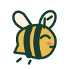
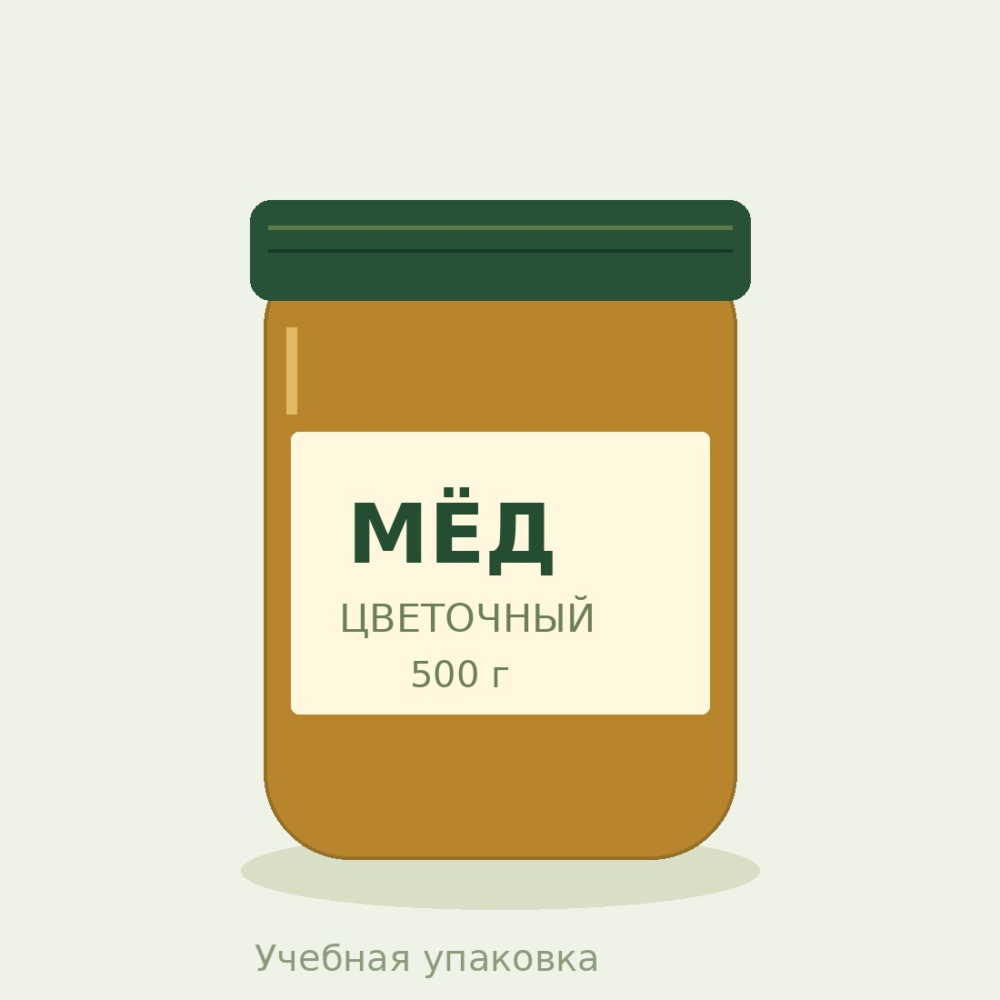
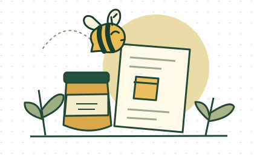

Скажите вместо того, чтобы печатать
Локальное распознавание русской речи. Просмотрите текст и подтвердите, какие поля заполнить.
Нужны микрофон, HTTPS или localhost.
ПчёлкаПомощник продавцаДЛЯ ТЕХ, КТО ПРОДАЁТ СВОЁ
Добавьте фотографии, проверьте сведения и получите карточку для сайта или материалы для объявления.

Сначала просто фото500 г · учебный пример
ОТ ФОТО ДО ГОТОВОГО БЛОКА
Мы собрали всю подготовку в четыре шага. На каждом экране только то, что нужно сейчас.
Товар целиком + этикетка
МАЛЕНЬКИЕ ВЕЩИ, КОТОРЫЕ ЭКОНОМЯТ ВРЕМЯ
Сохраните общие данные продавца, создавайте варианты фасовки и возвращайтесь к черновику с того места, где остановились.
Открыть мастерскую ↗
Локальное распознавание русской речи. Просмотрите текст и подтвердите, какие поля заполнить.
Нужны микрофон, HTTPS или localhost.Поверните кадр, сделайте его светлее и выберите квадратный формат. Без изменения самого товара.
Попросите написать короче, теплее или по делу. Можно задать своё пожелание и проверить предложение перед применением.
Qwen2.5, нужен WebGPU. Первая загрузка около 300 МБ.Одна страница с выбранными товарами и ссылкой для связи. Скачайте и разместите на своём сайте.
Название, масса и цена на листе A4. Удобно для ярмарки, прилавка или самовывоза.
Выберите товары и получите тексты и фотографии для Авито, Юлы или VK. Разместите их в своём аккаунте.
СНАЧАЛА ФАКТЫ
ИИ предлагает тип товара. Данные конкретного продукта ищутся в открытой базе и сверяются вами. Если сведений нет, поле остаётся пустым. Нейросеть помогает с формулировками по заполненным данным. Перед применением вы проверяете предложение.
ПЕРЕД НАЧАЛОМ
Да. Можно создать 15 новых карточек в день в этом браузере. Редактирование и скачивание существующих не расходуют лимит. Площадки могут брать плату за размещение у себя.
Пчёлка подготовит текст и фотографии. Публикацию вы завершаете в своём аккаунте. Платные API и автоматическая отправка не подключены.
Фото, товары и черновик сохраняются в вашем браузере. Голос распознаётся локально моделью Vosk, аудио не отправляется на сервер. В интернет-поиск передаётся только название или штрихкод товара.
Разрешите доступ к микрофону. Откройте сайт по HTTPS или локально через localhost. При первом использовании загрузится русская модель около 45 МБ. Можно вместо микрофона выбрать короткий аудиофайл, поддерживаемый браузером.
Qwen2.5 пишет текст локально в браузере с WebGPU. Можно задать тон и своё пожелание. При первом запуске скачивается около 300 МБ публичных файлов модели. API-ключи не нужны. Результат нейросети требует проверки. Если устройство не поддерживается, остаётся редактор и текст по данным.
Скачанный HTML содержит фото и оформление. Его можно вставить в HTML-блок сайта. Некоторые редакторы удаляют встроенные изображения и стили, в таком случае передайте файл администратору сайта.
НАЧНИТЕ С ОДНОГО ТОВАРА
Без платных API. Без установки, если пользуетесь сайтом.